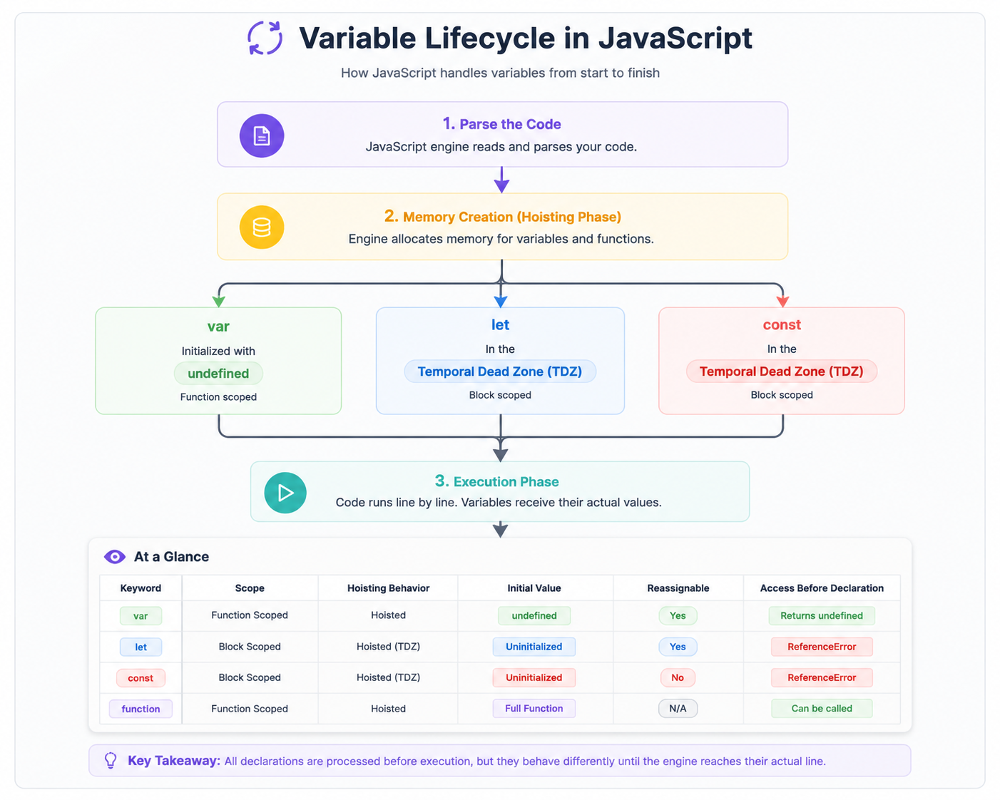

Core foundations every JavaScript developer needs — variables, types, conversions, operators, equality, and strict mode.
A variable is a named container used to store data in memory.
JavaScript provides three keywords to declare variables:
var, let, and const. They differ in
scope, hoisting, redeclaration, reassignment, and
lifetime.

var, let, and const, each with different
scoping rules and behavior during hoisting.
JavaScript offers three ways to declare variables. Choosing the correct one improves readability, prevents bugs, and makes code easier to maintain.
var name = "Alice"; // Function-scoped, can be redeclared & reassigned
let age = 25; // Block-scoped, can be reassigned
const PI = 3.14159; // Block-scoped, cannot be reassigned
age = 26; // ✅ Allowed
PI = 3.14; // ❌ TypeError| Feature | var | let | const |
|---|---|---|---|
| Scope | Function | Block | Block |
| Redeclaration | ✅ Yes | ❌ No | ❌ No |
| Reassignment | ✅ Yes | ✅ Yes | ❌ No |
| Hoisted | Yes (initialized as undefined) |
Yes (TDZ) | Yes (TDZ) |
| Must Initialize? | ❌ No | ❌ No | ✅ Yes |
const by default. Use let only when a value
needs to change. Avoid var in modern JavaScript because its
function scope and redeclaration behavior often cause bugs.
Hoisting is JavaScript's behavior of moving variable and function declarations to the top of their scope before code execution. Although all three variables are hoisted, they behave differently.
console.log(a);
var a = 5;
console.log(b);
let b = 10;
console.log(c);
const c = 15;| Concept | Explanation |
|---|---|
var |
Hoisted and automatically initialized with
undefined. Accessing it before declaration
does not throw an error.
|
| Temporal Dead Zone (TDZ) |
let and const are hoisted but remain
uninitialized until execution reaches their declaration.
Accessing them earlier throws a
ReferenceError.
|
| Why TDZ? | Prevents accidental use of variables before initialization, making bugs easier to detect. |
var is initialized as undefined,
while let and const stay inside the
Temporal Dead Zone (TDZ).
var is function-scoped, whereas
let and const are block-scoped.
Block scope includes if, for,
while, and { }.
if (true) {
var x = 10;
let y = 20;
}
console.log(x); // 10
console.log(y); // ❌ ReferenceErrorvar ignores block scope, which is why it can leak outside
loops and if blocks.
const makes the reference immutable,
not the object itself. Objects and arrays declared with
const can still be modified.
const arr = [1, 2, 3];
arr = [4, 5]; // ❌ TypeErrorconst arr = [1, 2, 3];
arr.push(4);
arr[0] = 99;
arr.pop();Same applies to objects.
const user = { name: "Sam" };
user.name = "Alex";
user.age = 30;
user = { name: "Max" }; // ❌ TypeErrorconst does not make objects or arrays immutable.
It only prevents changing the variable's reference.
Use Object.freeze() if you want to prevent modifications to an object's properties.
JavaScript has 8 data types: 7 primitive types and 1 non-primitive (object).
| # | Type | Example |
|---|---|---|
| 1 | String | Textual data: "hello", 'world', `template` |
| 2 | Number | Integers & floats: 42, 3.14, NaN, Infinity |
| 3 | BigInt | Arbitrary precision integers: 123n |
| 4 | Boolean | true or false |
| 5 | Undefined | A declared variable with no assigned value |
| 6 | Null | An intentional absence of value |
| 7 | Symbol | Unique, immutable identifiers |
| 8 | Object | Key-value collections (includes arrays, functions, dates) |
typeof "hi"; // "string"
typeof 42; // "number"
typeof true; // "boolean"
typeof undefined; // "undefined"
typeof null; // "object" — famous historical bug!
typeof {}; // "object"
typeof Symbol(); // "symbol"typeof null === "object" is a long-standing bug baked into JavaScript from its earliest versions — it can never be fixed without breaking the web.Every value in JavaScript belongs to either a Primitive Type or a Reference Type. The biggest difference is how values are stored in memory and how they are copied. Understanding this helps explain why objects sometimes change unexpectedly.
| Primitive Types | Reference Types |
|---|---|
|
String Number Boolean Undefined Null Symbol BigInt |
Object Array Function Date Map Set |
When a primitive value is assigned to another variable, JavaScript creates a completely new copy. Changing one variable does not affect the other.
let a = 10;
let b = a;
b = 20;
console.log(a); // 10
console.log(b); // 2010 is created for b.
Both variables are completely independent.
Objects and arrays are stored in memory only once. Assigning them to another variable copies only their reference (memory address).
let obj1 = {
value: 10
};
let obj2 = obj1;
obj2.value = 20;
console.log(obj1.value); // 20
console.log(obj2.value); // 20
Primitive
a ───► 10
b ───► 20
Reference
obj1 ─┐
├────► { value: 20 }
obj2 ─┘
Assignment (=) does not create a new object.
Use one of the following techniques to create a separate copy.
const user = {
name: "John"
};
// Shallow Copy
const copy1 = { ...user };
// Shallow Copy
const copy2 = Object.assign({}, user);
// Deep Copy
const copy3 = structuredClone(user);| Concept | Primitive | Reference |
|---|---|---|
| Stored As | Actual Value | Memory Address |
| Copied By | Value | Reference |
| Independent Copy | ✅ Yes | ❌ No |
| Mutable | ❌ No | ✅ Yes |
| Examples | String, Number, Boolean | Object, Array, Function |
Type Conversion is the process of converting a value from one data type to another. JavaScript performs conversion in two ways:
Number(), String(), or automatically through
JavaScript's type coercion rules.
In explicit conversion, the programmer intentionally converts a value to another type.
String(123); // "123"
Number("123"); // 123
Number("abc"); // NaN
Boolean(1); // true
Boolean(0); // false
parseInt("42px"); // 42
parseFloat("3.14m"); // 3.14| Function | Description |
|---|---|
String() |
Converts any value to a string. |
Number() |
Converts a value to a number. |
Boolean() |
Converts a value to true or false. |
parseInt() |
Extracts an integer from a string. |
parseFloat() |
Extracts a decimal number from a string. |
JavaScript automatically converts values during operations when different data types are used together.
"5" + 1; // "51"
"5" - 1; // 4
"5" * "2"; // 10
1 + true; // 2
"5" + null; // "5null"
true + true; // 2
null + 1; // 1+ performs string concatenation if either operand is a string.-, *, /, % convert operands to numbers.true → 1, false → 0).Every value in JavaScript is "truthy" or "falsy" when evaluated in a boolean context, like an if statement.
false0 and -00n (BigInt zero)"" (empty string)nullundefinedNaN"0", "false" (non-empty strings)[] (empty array!){} (empty object!)[] truthy or falsy? A: Truthy! if ([]) runs the block. This surprises many beginners coming from other languages.Boolean(value) or !!value to explicitly check a value's truthiness.| Category | Examples | Purpose |
|---|---|---|
| Arithmetic | + - * / % ** | Math operations |
| Assignment | = += -= *= /= | Assign / update values |
| Comparison | == === != !== > < | Compare values |
| Logical | && || ! | Combine boolean logic |
| Nullish coalescing | ?? | Fallback only for null/undefined |
| Optional chaining | ?. | Safe property access |
| Ternary | cond ? a : b | Inline if/else |
const user = { name: "Sam" };
// Optional chaining — avoids errors on missing properties
console.log(user?.address?.city); // undefined, no crash
// Nullish coalescing — only falls back on null/undefined
const count = 0 ?? 10; // 0 (0 is not null/undefined)
const count2 = 0 || 10; // 10 (0 is falsy)?? and || look similar but behave differently — ?? only triggers on null/undefined, while || triggers on any falsy value.JavaScript offers two ways to compare values, and choosing the right one avoids a whole class of bugs.
"5" == 5 → truenull == undefined → true"5" === 5 → falsenull === undefined → false0 == false; // true
"" == 0; // true
null == undefined; // true
NaN == NaN; // false (NaN never equals itself!)
0 === false; // false
"" === 0; // false
Object.is(NaN, NaN); // true (use for NaN checks)=== and !==. Only reach for == in the rare, deliberate case of treating null and undefined as equal.Strict Mode is a special JavaScript mode that enables a stricter set of rules. It helps catch common coding mistakes, prevents accidental global variables, improves code security, and makes JavaScript easier to optimize.
Place "use strict"; at the beginning of a JavaScript
file or function.
"use strict";
let name = "John";
console.log(name);import/export) and Classes always run in
Strict Mode. You don't need to write
"use strict";.
| Behavior | Without Strict Mode | With Strict Mode |
|---|---|---|
| Undeclared Variables | Creates a global variable | ❌ ReferenceError |
| Silent Errors | Ignored | ❌ Throws Error |
this in Function |
Global Object | undefined |
| Duplicate Parameters | Allowed | ❌ SyntaxError |
| Deleting Variables | Ignored | ❌ SyntaxError |
"use strict";
x = 10;
// ❌ ReferenceError
// x is not defined
Without Strict Mode, JavaScript automatically creates
x as a global variable, which often causes bugs.
this"use strict";
function show() {
console.log(this);
}
show();
// undefined
In normal mode, this refers to the global object
(window in browsers). In Strict Mode,
this becomes undefined.
"use strict";
function add(a, a) {
}
// ❌ SyntaxError"use strict";
let age = 25;
delete age;
// ❌ SyntaxError"use strict";
const obj = {};
Object.defineProperty(obj, "id", {
value: 1,
writable: false
});
obj.id = 2;
// ❌ TypeError"use strict"?this?| Question | Answer |
|---|---|
| What is the difference between var, let, and const? | var is function-scoped, hoisted with a default of undefined, and can be redeclared. let/const are block-scoped and live in the TDZ until initialized. let can be reassigned; const cannot (but its contents can still be mutated). |
| What is hoisting? | JavaScript registers variable/function declarations in memory before running the code. var is initialized to undefined; let/const stay uninitialized in the TDZ and throw if accessed early. |
| Can you reassign a const array or object? | No — you can't point the variable to a new array/object. But you can mutate the existing one (push, pop, change properties) since only the binding is locked. |
| What is the Temporal Dead Zone (TDZ)? | The period between entering a block and the line where a let/const variable is declared. Accessing the variable during this window throws a ReferenceError. |
| What are the primitive data types in JavaScript? | String, Number, BigInt, Boolean, Undefined, Null, and Symbol. Everything else falls under the single non-primitive type: Object. |
| What is the difference between primitive and reference types? | Primitives are copied by value — each variable holds an independent copy. Reference types are copied by reference — multiple variables can point to the same object. |
| What is the difference between == and ===? | == coerces types before comparing (e.g. "5" == 5 is true). === compares type and value with no conversion ("5" === 5 is false). Prefer ===. |
| Why does typeof null return "object"? | It's a bug from the first version of JavaScript, kept for backward compatibility since fixing it would break existing code. |
| What are falsy values in JavaScript? | Exactly 8: false, 0, -0, 0n, "", null, undefined, NaN. Everything else — including [] and {} — is truthy. |
| What does "use strict" do? | Enables strict mode, which throws errors for actions that would otherwise fail silently, disables some legacy features, and makes this default to undefined in plain function calls. |
| What is the difference between null and undefined? | undefined means a variable is declared but not yet assigned (set automatically). null is an intentional "no value" set deliberately by the developer. |
| How do you deeply copy an object instead of copying its reference? | Use spread ({...obj}) for a shallow copy, or structuredClone(obj) / JSON.parse(JSON.stringify(obj)) for a deep copy of nested structures. |